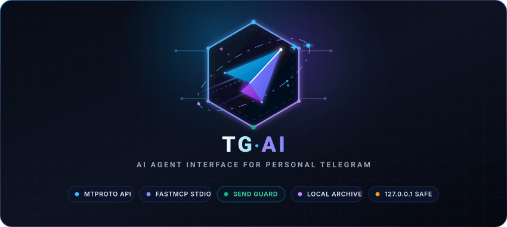

#tg-ai use cases: 40 things you can stop doing by hand

Every scenario below is a real prompt you can paste into Claude Code, Cursor, Antigravity, Codex, Windsurf or any other MCP client once tg-ai is installed. Each one names the tools it uses, so you can see exactly what your agent is doing on your behalf.
Read this page in Russian · Back to the README
A note on honesty. Everything here maps to one of the nine tools that actually exist. There are no invented benchmarks and no testimonials on this page. Where something is impossible today, it says so - see What tg-ai cannot do.
#Contents
- Your searchable memory - stop scrolling, start querying
- Inbox triage without opening Telegram
- Reporting from your terminal
- Writing in your own voice
- Chained and autonomous workflows
- Life admin and relationships
- What tg-ai cannot do
- FAQ
#1. Your searchable memory
Telegram's own search is one chat at a time, network-bound, rate-limited, and useless for a partial word. Your archive is a local PostgreSQL database with full-text and trigram indexes. Queries return in milliseconds, cost nothing, and touch no Telegram server - so there is no rate limit and no ban risk, ever.
This is the group that changes how you work first.
#1.1 Recover the config someone sent you six months ago
You know a colleague sent the staging IP. You do not know when. Scrolling Telegram search on a phone, one chat at a time, is fifteen minutes you never get back - and you will do it again next week.
Find the IP address of the new test server that @vasya sent me last month
and write it into .envtg_search_local_history runs one indexed query and returns instantly. The agent reads the value out of the message and edits the file itself. You never opened Telegram.
#1.2 Find the address before you are already late
Find the address Anna sent me for Friday's meetingThe classic: the address exists, in a chat, somewhere above three months of memes. One query, one line back, timestamped.
#1.3 Settle "what did we actually agree?"
Search my history with @client for everything about the price and the deadline,
and give me a timeline of what was agreed and whenFull-text search returns every match with its date; the agent orders them and tells you what changed between them. This is the difference between "I think we said 2000" and a dated quote of the message where you both said it.
#1.4 Find every promise you made to one person
Search my chat with @lead for messages from me containing "I'll", "I will",
"tomorrow" or "by Friday". What did I commit to and did I do it?Your own outgoing messages are archived too. This is an uncomfortable prompt to run and a very useful one.
#1.5 "Who mentioned this?" across every chat at once
Search my whole archive for "Hetzner" - who has talked to me about it and when?Telegram makes you pick a chat first. Your archive does not: one query spans every conversation you have ever synced.
#1.6 Find it when you cannot spell it
Find the street name someone sent me - it started with "Khresh" somethingFull-text search runs first. When it finds nothing, tg-ai automatically falls back to a trigram substring match, so a fragment of a word still hits. The reply tells you which strategy matched, so you know how loose the hit was.
#1.7 Search across languages and alphabets in one query
Your chats are not monolingual and neither is the index. tg-ai deliberately uses a simple text search configuration rather than an English stemmer, because a stemmer built for one language silently drops matches for every other one (ADR-0003).
Find every message about the apartment deposit, in any language#1.8 Recover the link you never bookmarked
Find the article about Postgres indexes someone sent me this yearEvery link you were ever sent is in the archive, searchable by the words around it. Your read-it-later app is not the only place things go to die.
#1.9 Reconstruct an invoice, an order or a booking
Find the order number and tracking link from the shop chat, and check the
delivery statusThe agent pulls the number out of the history and can then go and use it - a web fetch, a browser, whatever else your client has. tg-ai supplies the fact; your agent does the rest.
#1.10 Build a brief on a person before you talk to them
Summarise everything @partner and I have discussed in the last six months.
What is still open?One query, several hundred messages, one summary. This is the prompt to run twenty minutes before a call.
#2. Inbox triage without opening Telegram
Opening Telegram to check one thing costs you the next forty minutes. These prompts answer the question without opening the door.
Reading never marks anything as read. Your unread badges stay exactly where they were, so nobody sees a blue tick you did not intend to send. Every prompt in this section is a read, so none of them is visible to anyone.
The one thing that can mark a chat read is *replying* to it, and only if you turn on TG_READ_ON_SEND - which is off unless you set it. Then a delivered reply marks that one chat read, exactly as opening it on your phone to answer would.
#2.1 The deep-work exit
Four hours of focus. Phone face down. You surface, and there are fifty unread chats.
Check my unread Telegram. Ignore spam and anything that isn't a person.
If there's anything from my team, my boss or my family, summarise what they
actually want - bullets, no fluff.tg_get_unread_dialogs lists who is waiting; tg_get_recent_messages pulls the detail only for the people you named. You get a paragraph instead of an hour.
#2.2 The morning briefing
What happened on Telegram overnight? Sort by whether it needs me today.#2.3 "Is anything actually on fire?"
Anything urgent in my unread? One line. If not, just say no.The value of this prompt is the "no" - it is the one that lets you go back to work instead of checking anyway.
#2.4 Coming back from holiday
I've been away two weeks. Go through my unread, group it by person, and tell me
what still matters now and what has already resolved itself.Half of a two-week backlog is dead on arrival. Finding out which half is the whole job.
#2.5 Who is waiting on me, specifically
Which unread messages need a reply from me, and which are just FYI?#2.6 Did they answer yet?
What did @anna reply?tg_get_recent_messages reads the live account, not the archive, so a reply from thirty seconds ago is already there.
#3. Reporting from your terminal
Your agent already has the whole session in context: the files it changed, the decisions you made, the reasons. Writing that up by hand is pure re-entry of information the machine already has.
#3.1 The end-of-session report
You just refactored a schema together. Now someone has to tell the project manager.
Write a detailed report on what we just did to the database - what changed,
why the new schema is better, what to watch for - and send it to
@project_manager on TelegramThe agent composes from real context, tg_send_message checks the recipient is someone you actually know, splits the text into chunks under Telegram's 4096-character limit on sentence boundaries, and paces them 2.5 seconds apart so nothing looks like a burst.
#3.2 Standup, written from what actually happened
Read my git log for today, turn it into a three-line standup, and send it
to @team_leadMore accurate than what you would have typed from memory, and available before coffee.
#3.3 Deploy and incident notices
Deploy finished. Tell @ops it's live, which version, and that the migration ran
clean.#3.4 Send the long thing without thinking about limits
Send @colleague the full explanation of how our auth flow worksFour thousand characters is not your problem. Chunking on sentence boundaries, never mid-word, and the pacing between chunks are handled for you.
#3.5 Send a snippet, a config or a command
Send @dev the exact docker command we just worked out#3.6 Reach someone new - deliberately
Send the invoice details to +380501234567If there is no history and they are not a contact, nothing is sent. You get a warning explaining that messaging a stranger from a personal account is what triggers Telegram's anti-spam system, and naming tg_add_contact as the deliberate next step. There is no override flag; that is the point.
Add +380501234567 to my contacts as "Maria Accounting", then send the invoice#4. Writing in your own voice
This is the part that makes the difference between an assistant you use twice and one you use every day.
You do not write to your boss the way you write to your partner. A reply drafted in a model's default register - even a good one - is instantly obvious to anyone who knows you. The Dialog Persona is a per-chat style profile that fixes exactly that.
#4.1 Bootstrap a persona for your busiest chat
Look at how I write to @anna - read my actual messages - and record her dialog
personatg_get_dialog_persona returns three things: the measured statistics of your own messages in that chat, a sample of them verbatim, and whatever persona is already stored. Your agent reads them and calls tg_set_dialog_persona with what it observed - how you address her, your tone, who she is to you.
#4.2 Draft a reply that actually sounds like you
Reply to @anna about moving Friday's meeting to MondayBefore drafting, the agent reads the persona. It knows your median message length in *that specific chat*, whether you start sentences in lower case, whether you use emoji with her, whether you punctuate, and whether you tend to fire three short lines instead of one long one.
#4.3 A different register for every person
Show me which of my chats have a persona and which don't, busiest firsttg_list_dialog_personas orders your dialogs by how much you have written in them, so you can see instantly where a persona is worth having. Write one for your boss, one for your partner, one for your best client - each independent.
#4.4 Get the formal/informal "you" right, every time
Languages with a formal and informal second person make this the single most embarrassing thing to get wrong. It lives in the persona's addressing field, written by your agent from your real messages rather than guessed per reply.
Record @director's persona - note that I address him formally and always use
his first name and patronymic#4.5 Keep your habits, including the unflattering ones
If you never capitalise, never use full stops, and answer "ok" 40% of the time, the persona records exactly that. The agent is told the *distribution* - median, 90th percentile, short-reply share - not an average, because a model told "your typical reply is 90 characters" writes 90 characters every time, and that uniformity is itself the giveaway.
#4.6 Write the hard message
Read how I write to @boss, then draft a message asking for a review of my
salary. Keep it in my voice - don't make it sound like a cover letter.The message you have been putting off for three weeks, drafted in your own register instead of a model's business-formal default. You still edit it. You still send it. But you start from something that sounds like you.
#4.7 The right language per chat
The persona records your script mix for each conversation - Latin, Cyrillic and so on, with the share of each - so a reply comes back in the language and alphabet you actually use with that person, not the language you happen to be prompting in.
#4.8 Know when a persona has gone stale
Is @anna's persona still accurate?Freshness is judged on three axes and the answer names which one fired: volume (50 new messages of yours since the analysis), age (90 days), or drift (any of five measured ratios moving by 0.20, or your median length doubling). A stale persona says so instead of quietly describing who you used to be.
#4.9 Why it never degenerates into a model imitating itself
Every message this server sends is archived exactly like one you typed by hand. Left alone, a persona re-analysed after a few drafted replies would measure its own output, and within two or three refreshes it would be a model of the model - reading *more* consistent than you, so the drift would be invisible.
So the analysis window is frozen at creation. Messages archived after the baseline are never measured (ADR-0008). Your persona describes you, permanently, and only your own outgoing messages ever reach the analyser.
#5. Chained and autonomous workflows
tg-ai has no loop and no brain of its own - it is a set of handles. The loop lives in your agent. That is what makes these possible.
#5.1 Wait for approval, then act
Tell @lead_dev the DB schema is ready and ask for deploy approval. Keep checking
his replies; the moment he says ok or go ahead, run docker compose up -d and
apply the migrations.The agent sends, then polls tg_get_recent_messages, reads the *meaning* of the answer rather than matching a keyword, and only then switches to your shell. You are not sitting there refreshing a chat.
#5.2 A scheduled inbox check
If your client can run on a timer (Claude Code's /loop, a cron job, a systemd timer), point it at the same prompt:
Every 30 minutes: check unread Telegram. If anything is from my team and looks
urgent, tell me. Otherwise stay quiet.#5.3 An escalation ladder
Ask @contractor for a status update. If there's no reply in four hours, tell me
rather than asking again.Note what this does *not* do: it does not nag. One message, then it reports back to you. Repeated unanswered messages are exactly the pattern Telegram's anti-spam system looks for.
#5.4 Research, then report
Read the last week of my chat with @client, cross-check it against the open
issues in this repo, and send me a summary of what we owe them#5.5 The end-of-day digest
Summarise every Telegram conversation I had today, list what I promised anyone,
and send that summary to my own Saved MessagesSending to me targets Saved Messages, which is always allowed - the account is writing to itself. It is the perfect place for a private daily log.
#6. Life admin and relationships
Not everything worth automating is work.
#6.1 The replies you owe
Find people who wrote to me in the last two weeks that I never replied toThe quiet social debt that accumulates in a messenger, made visible.
#6.2 Family logistics
Check if my wife sent me anything about the weekend, and what I'm supposed to
be buying#6.3 Negotiating with a seller
Find everything in my chat with the seller about the price and the condition,
and draft a reply holding at my last offer - in my usual tone, not too soft#6.4 Reconnect before it gets awkward
Search my archive for people I used to talk to often and haven't messaged in
over six months#6.5 A recurring commitment, tracked
Find every message where I agreed to send someone something, and check which of
those I actually followed up on#What tg-ai cannot do
Stated plainly, because a tool that oversells itself wastes your time:
- It cannot reply automatically on its own. There is no LLM in this repository. tg-ai is passive: it sleeps until a client calls it. Autonomous replies require an agent loop running on top - see 5. Chained and autonomous workflows.
- Groups and channels are rationed, not free. It reads groups and channels you have already joined, one at a time, at most once every five minutes each and twenty reads a day. It will never join one for you, and it cannot read one you have not joined. In a channel it can only post if you are an admin there.
- No media. Only message text is archived and sent - no photos, files or voice notes.
- It never deletes or edits anything on your account, and reading never marks a chat as read. Replying can, if you set
TG_READ_ON_SEND=true- off unless you do. - No bulk or broadcast sending. One recipient at a time, by design. A batch send would defeat every anti-spam guarantee in the project.
- No messaging strangers. No history and not a contact means nothing is sent. There is no override flag.
- The archive is as fresh as your last sync.
tg_search_local_historysees whatjust tg-synchas pulled;tg_get_recent_messagescovers the gap by reading the live account.
#FAQ
#Can this run as a fully automatic autoresponder?
Technically yes, but not from this repository alone. Every handle you need is here - tg_get_unread_dialogs to notice, tg_get_dialog_persona to sound like you, tg_send_message to reply. What is missing is the loop and the model, and both live in your agent. Put an autonomous client on a timer and you have one.
Whether you *should* is a different question. Consider starting with drafts you approve before sending.
#Will people be able to tell it is not me?
That is exactly what the Dialog Persona is for, and it is the honest answer that this is a per-chat style profile, not magic. It matches length, rhythm, punctuation, capitalisation, emoji rate, script and register from your real messages. Judgement about *what to say* remains yours.
#Is my chat history sent anywhere?
No. The archive is a PostgreSQL container bound to 127.0.0.1:5434. The model in your MCP client only ever sees what a tool returns in answer to something you asked.
#How fast is search, really?
It is a single indexed query against local PostgreSQL - a GIN index over a generated tsvector column, with a pg_trgm fallback. No network call to Telegram is involved, which is also why it has no rate limit.
#What happens if I hit a Telegram rate limit?
You are told, and nothing retries. A FloodWaitError comes back as "we must wait N seconds" rather than a retry loop - because retrying is what extends the limit.
Ready? Install tg-ai · Read the safety rules · Browse the full documentation